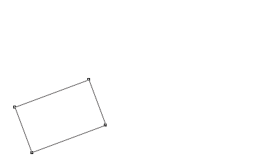

Прилипание к направляющим под углом
SLx1 / 06.07.2011, 23:45/00:41
Форум:
Коллеги! Можно ли осуществить прилипиние фигур к направляющим под углом?
(имеется ввиду синхронизация угла направляющей и фигуры)
И соответственно перемещение вдоль оных.... может как-то скриптом можно?
Заранее спасибо!

SLx1, главное повернуть а перемещать не проблема, (для этого есть функция Dynamic Guides), кстати из за отсутствия этой дополнительной функции при повороте объекта, я до сих пор не могу закончить векторную карту.
Des425, Вот как я решаю угол:
http://narod.ru/disk/20478842001/Corel.exe.html
А как вы решаете перемещение?
SLx1, а не проще скопировать угол поворота направляющей и применить его к объекту? :)
А перемещение, сказали же уже через динамические направляющие:

(что то я про них изначально совсем забыл...старею :D )
А где такое настраивается? (что-то не могу найти, похоже тоже старость ;)))
UP. Нашел!;)) Спасибо, коллеги!
Коллеги! По горячим следам, так скачать:) А нет ли способа (или кнопки) "зафиксировать" пойманную направляющую?
Страницы